Na sprzedaż oferuję Ford Explorer Platinum z 2021 roku – luksusowego, przestronnego i bardzo dobrze wyposażonego SUV-a, który łączy komfort, moc, nowoczesną technologię oraz charakterystyczny amerykański styl. Ford Explorer Platinum to idealny samochód zarówno do codziennej jazdy, jak i dalszych podróży z rodziną.
🟢 Zapraszam do kontaktu Daniel 🟢
Ford Explorer Platinum oferuje przestronne i komfortowe wnętrze, wysoką pozycję za kierownicą oraz bardzo bogate wyposażenie. Mocny silnik benzynowy zapewnia świetną dynamikę i odpowiedni zapas mocy, a automatyczna skrzynia biegów gwarantuje komfortową jazdę.
Marka / Model: Ford Explorer Platinum
Rok produkcji: 2021
Silnik: Benzynowy
Skrzynia biegów: Automatyczna
Nadwozie: SUV
### Kluczowe wyposażenie:
Komfort:
* Luksusowe i przestronne wnętrze
* Skórzana tapicerka
* Elektrycznie regulowane fotele
* Podgrzewane i wentylowane fotele
* Wielofunkcyjna kierownica
* Automatyczna klimatyzacja
* Klimatyzacja dla pasażerów tylnego rzędu
* Elektryczne szyby
* Bezkluczykowy dostęp
* Elektrycznie otwierana klapa bagażnika
* Przestronny bagażnik
* Trzeci rząd siedzeń
Multimedia i technologia:
* Duży ekran multimedialny
* System multimedialny Ford SYNC
* Apple CarPlay / Android Auto
* Bluetooth
* System audio premium
* Sterowanie funkcjami z kierownicy
* Cyfrowy zestaw wskaźników
* Nawigacja
* Ładowanie urządzeń
* Nowoczesne systemy wspomagające kierowcę
Bezpieczeństwo:
* Kamera cofania
* Czujniki parkowania
* Tempomat
* System monitorowania martwego pola
* System ostrzegania przed kolizją
* Asystent pasa ruchu
* System kontroli trakcji i stabilizacji
* Systemy bezpieczeństwa Ford
* System wspomagania parkowania
Wyposażenie zewnętrzne:
* Aluminiowe felgi
* Reflektory LED
* Charakterystyczny grill wersji Platinum
* Elektrycznie składane lusterka
* Elegancka i masywna sylwetka
* Chromowane elementy wykończenia
* Sportowy charakter wersji Platinum
Wnętrze / Wykończenie:
* Wysokiej jakości materiały wykończeniowe
* Skórzana tapicerka
* Luksusowe wykończenie
* Komfortowe fotele pierwszego i drugiego rzędu
* Przestronna kabina pasażerska
* Trzeci rząd siedzeń
* Ergonomiczne wnętrze
* Duża ilość miejsca dla pasażerów
Ford Explorer Platinum 2021 to połączenie luksusu, komfortu, przestronności oraz mocnego charakteru SUV-a. Bogate wyposażenie wersji Platinum sprawia, że samochód oferuje wysoki poziom komfortu zarówno kierowcy, jak i pasażerom.
Duże nadwozie, przestronne wnętrze, trzy rzędy siedzeń oraz bogate wyposażenie sprawiają, że Explorer świetnie sprawdzi się jako samochód rodzinny, na długie trasy oraz do codziennej jazdy.
Auto prezentuje się bardzo atrakcyjnie, oferuje wysoki komfort jazdy i jest gotowe do użytkowania.
🟢 Zapraszam do kontaktu Daniel 🟢
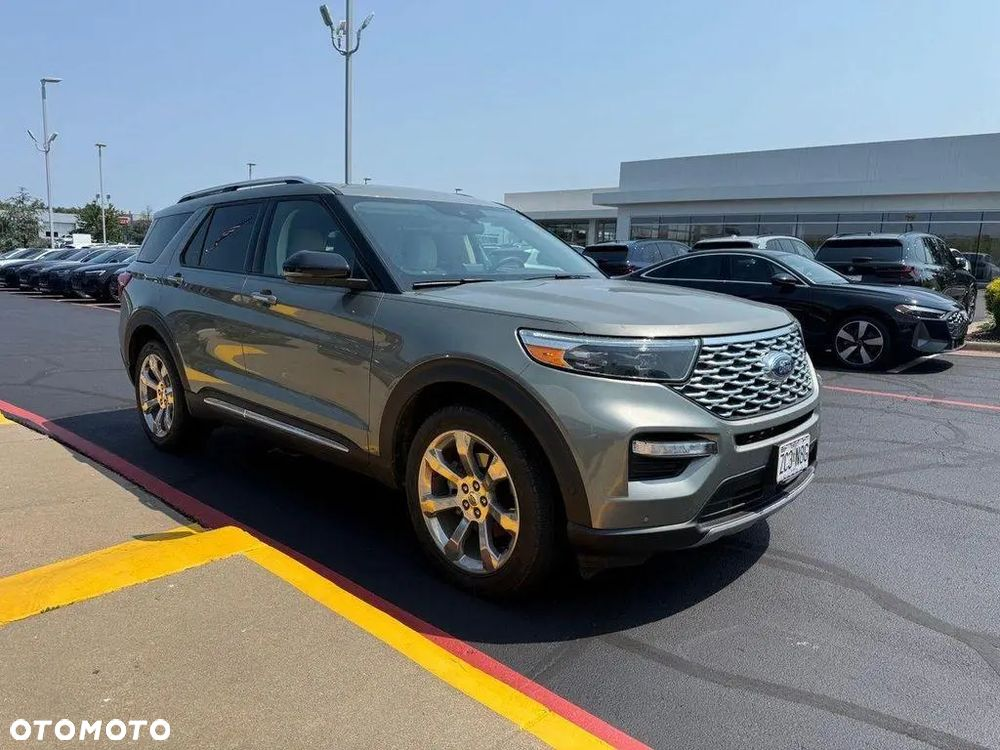
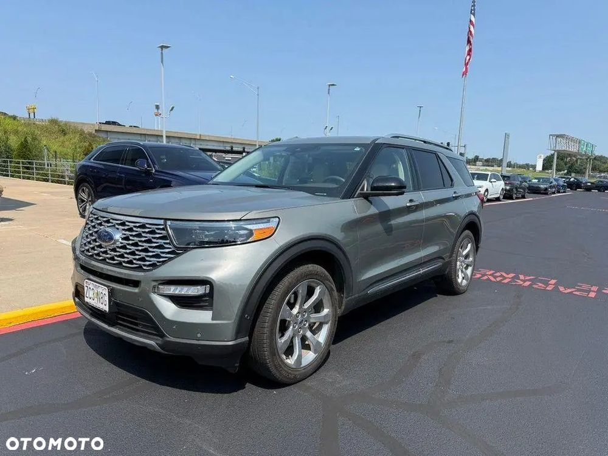
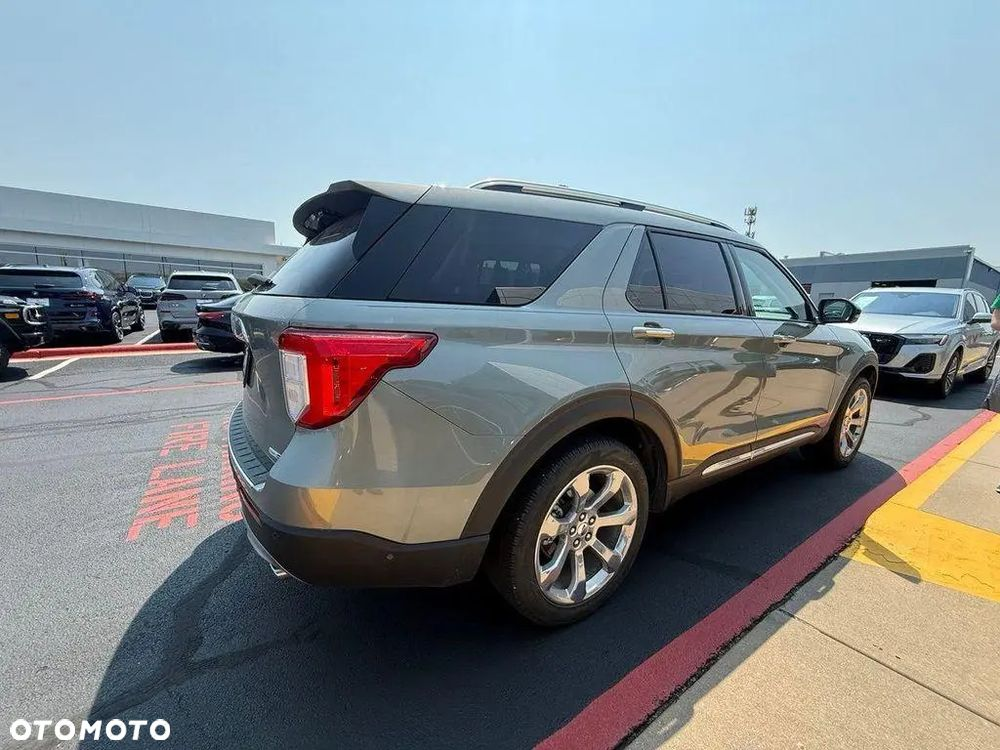
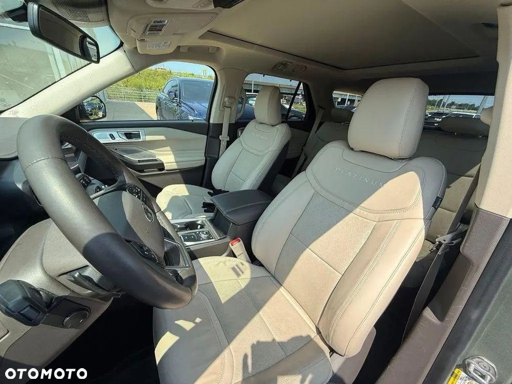
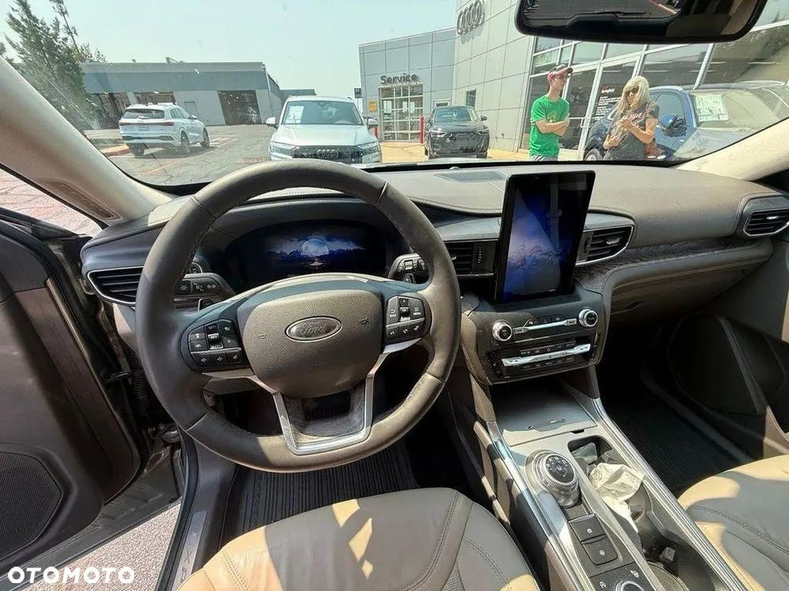
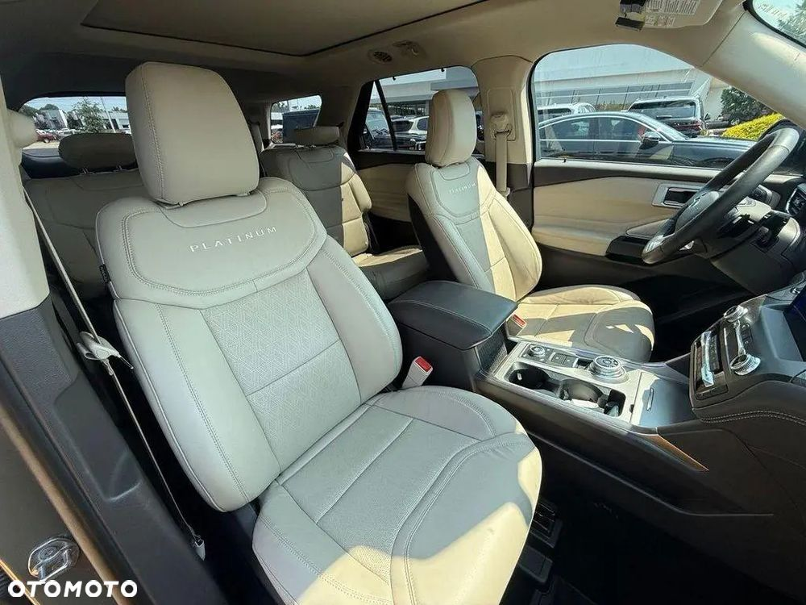
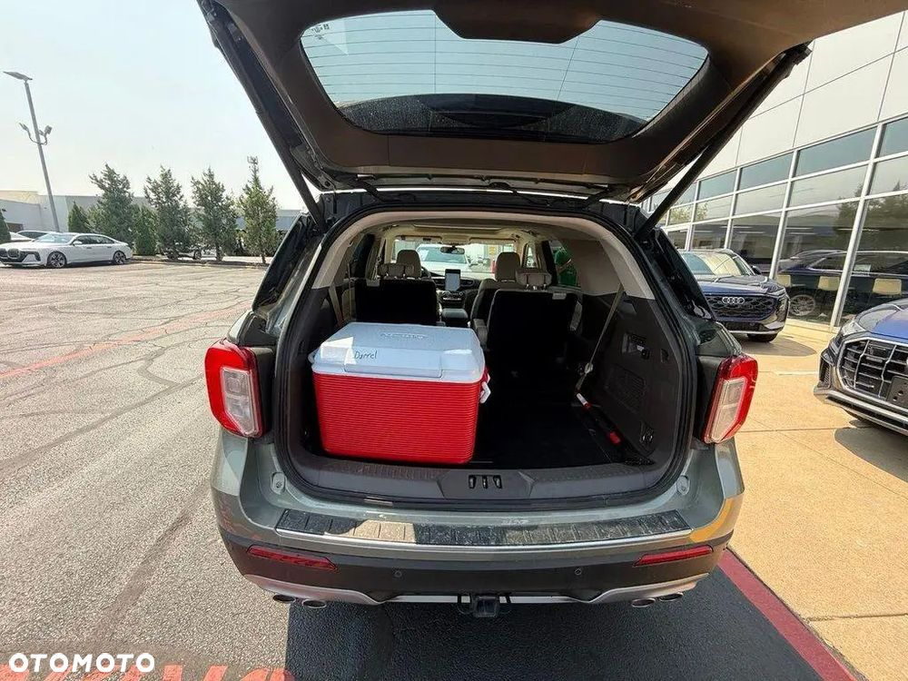
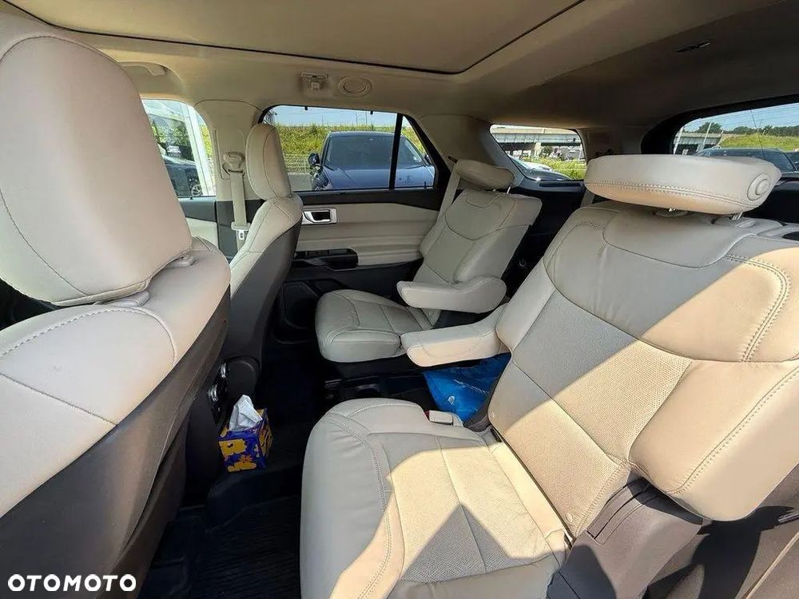
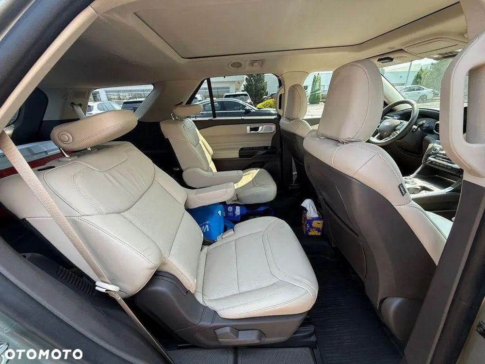
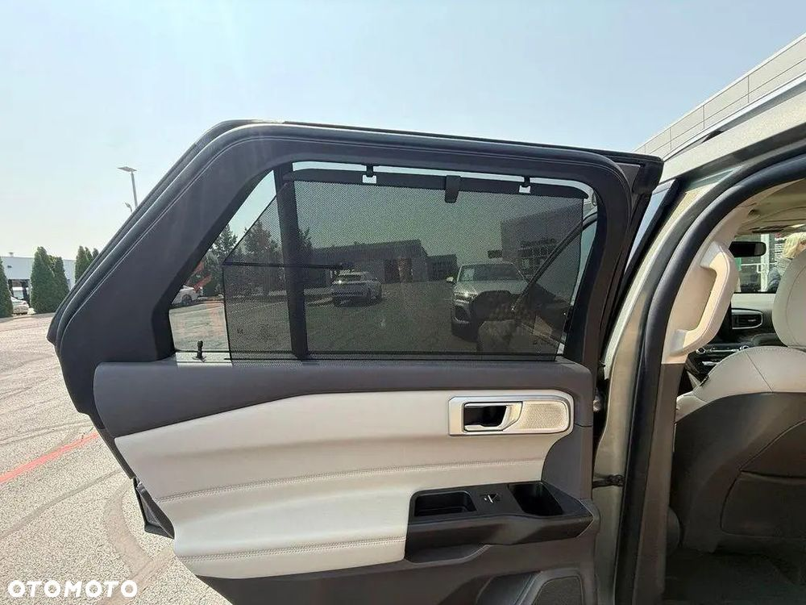
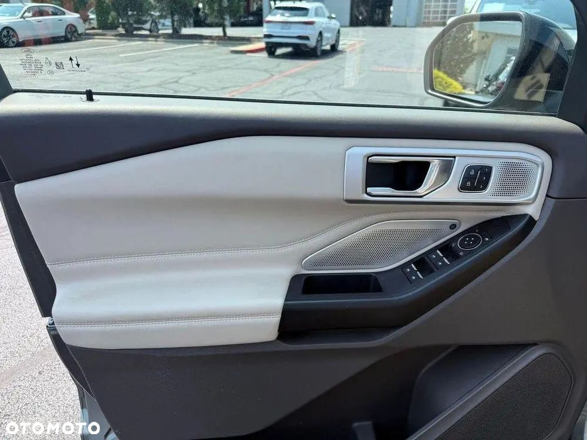
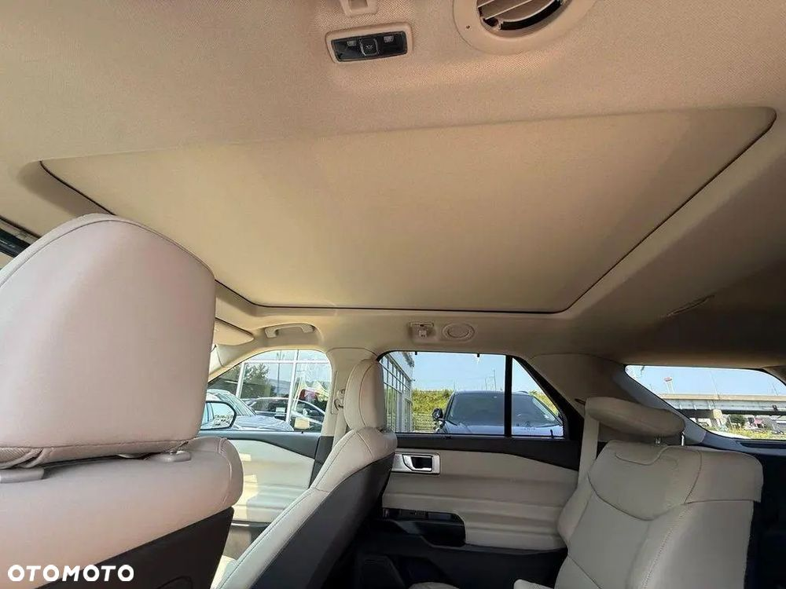